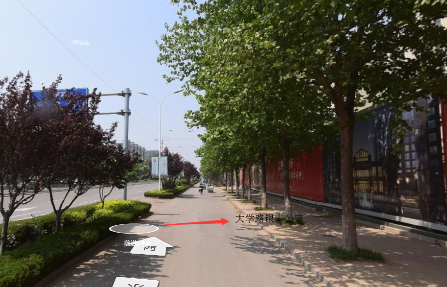

概况
水厂
SCADA
选择站点：
大学路-银丰公馆
骏驰汽修
大学路-恒大绿洲
汇富小区北
三里庄大桥北
莲台山路
富群便利
长清区政府
凤凰路桥北
经十西-重汽路东南
马山路-老周水族
沃德大道
V6折扣仓
清河街
长清第一中学
长清区财政局
莲台山路
鑫悦宾馆
光华防水
时代餐厅（恒大店
骏驰汽修
海棠路
汇富小区
长清区政府
沃德大道
凤凰路桥北
平安街道
济南幼师
原山官邸
开始时间
结束时间
开始查询
监测点地图浏览
监测点资源浏览

监测点压力曲线
监测点瞬时流量曲线
监测点累计流量曲线
监测点水质-浊度曲线
监测点水质-余氯曲线
监测点水质-PH曲线
管网平均压力
管网平均浊度
管网总流量